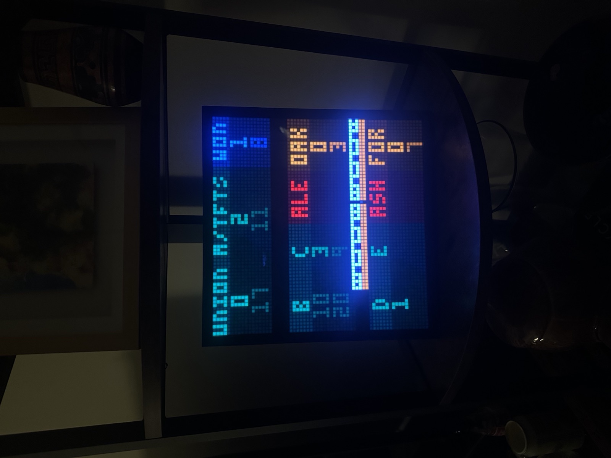
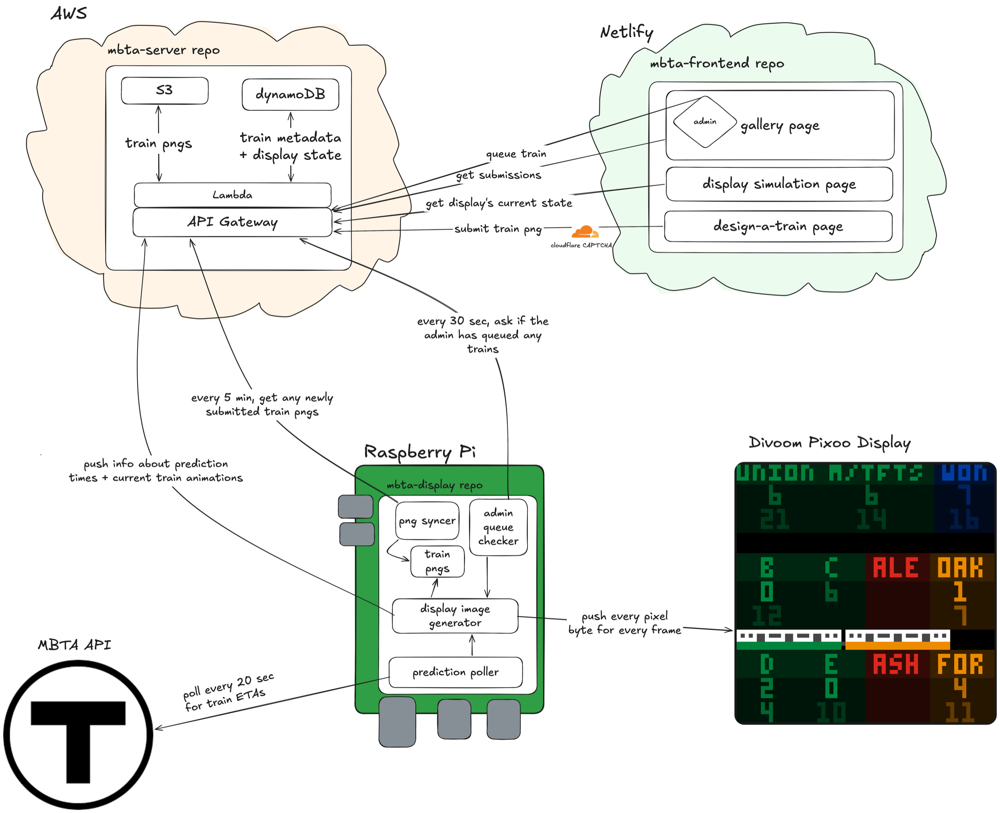

MBTA Pixel Train Display
I have a 64×64 pixel LED display (Divoom Pixoo64) in my apartment that shows live MBTA train arrival predictions for the stations near me, with a little pixel-art train that animates across the screen whenever one's arriving at the station.
What it does
- Shows how many minutes I should wait until leaving my apartment to catch the T exactly as it's pulling into the platform. The numbers get brighter as it gets closer to go time.
- Sends a pixel train across the screen, in the right line color, whenever one is arriving at the local station.
- Mixes in trains that people design and submit on the website, with extra odds for your own train around your birthday.
- Shows a live copy of the display on the website, so anyone can see what's on it right now.
- Switches to a clock overnight while the T isn't running.
You can submit a train right now at makeatrain.pre-idea.com (or makeatrain.netlify.app in case I don't renew my domain subscription hehe). DO IT!!! IT'S SO FUN!!! Any time a train goes by, there's a chance it'll be your train, with better odds during your birthday week!
In Action (note: the red line was down when taking these videos ;) )
Train times auto-update every 20 seconds:
An animation of the appropriately-colored T car goes by when it's arrived at my local station. Left → right means it's northbound, right → left means it's southbound. At the time of taking the below photo, there was a southbound orange line train at Downtown Crossing station.

And extra fun train sprites go by occasionally by chance (or by an admin manually triggering it :D). Every month gets a special train that has 1/6 odds of appearing every time a train is at the station. I of course had to get festive for July :)
How it fits together
